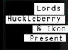
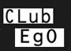
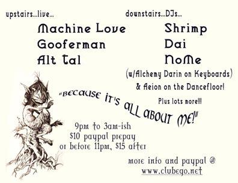

Alt Tal is a passionate and hard-hitting
Jazz ensemble in the San Francisco Bay Area
Who play live in Oakland's nouveau-venerable Cafe Van Kleef and acclaimed gastroclub Disco Volante.
We've enjoyed the many opportunities we've had to perform for
audiences around the Bay Area.
Here are some of the venues and parties at which we've had the
pleasure of performing.
Past Gigs
Disco Volante
347 14th St.
Friday, 25 February 2011
Monday, 28 February 2011
Monday, 14 March 2011
Monday, 21 March
Monday, 28 March
Monday, 11 April 2011
Monday, 25 April
Monday, 9 May 2011
Monday, 23 May
Monday, 13 June 2011
Monday, 27 June
Monday, 11 July
Monday, 25 July
Monday, 8 August
Monday, 22 August
Monday, 12 September
Monday, 26 September
Dining and drinks especially for folks in the service industry.
Vesuvio Caffe
255 Columbus Ave
Sunday, 23 October 2010
Sunday, 10 May 2009
Sunday, 4 May 2008
Tuesday, 18 December 2007
Wednesday, 5 September 2007
Wednesday, 28 July 2004
We've played as part of the North Beach Jazz Festival,
Art in the Alley,
The 50th Anniversary of the publishing of Jack Kerouac's On The Road, and
Parties for Vesiuvio's regulars.
Class Struggle Christmas Party
3135 Filbert Street
Oakland CA
Saturday, 17 December 7:30 PM - 8:30 PM
Sliding scale $5-$20 for donations
2011 has been a year marked by revolutionary upheavals
internationally and the return of struggle right here
in the United States.
For the last ten years, the Center for Economic Research
and Social Change has played a vital role in providing
a forum for the exchange of political ideas that are
necessary to rebuild a fighting left here in the US.
Please join us for our Winter fundraiser.
Silent Auction and Bar.
Facebook event



Club Ego
60 6th St. (& Jessie)
255 Columbus Ave
Friday 16 Jan 2004
Phrasing in lyric with its odd breaths and resolve, Alt Tal renders it
sassily. Experience Alt Tal headlining at Club Ego, on Friday, 16 January 2004.
Bringing out the Soprano for Elaine and l'Amoureuse de
mon Père, Alt Tal gets shockingly candid, then gives you a
fistful of black eye with Mossad and the ever-downtown
The Nymph.
"I need to belive
You trust
My feelings are true."
-- from News from Milan by David Alt
When it comes down to it, everyone likes the best moments of a Jazz
ballad. In this spirit, Alt Tal gives you the untrite
Frivolity, or Just a Cup of Coffee.
"The poison raku glaze browns
My once-fragrant fire-escape vine."
-- from Jasmine by David Alt
Don't miss Alt Tal or you will miss the locus of gravitational deviance.
|
Past Gigs
Cafe Van Kleef
1621 Telegraph Ave, Oakland 94612
Friday, 25 January 2008
Friday, 28 March 2008
Friday, 11 April 2008
Friday, 9 May 2008
Friday, 8 August 2008
Friday, 26 September 2008
Saturday, 29 November 2008
Friday, 9 January 2009
Thursday, 12 February 2009
Friday, 27 February 2009
Thursday, 19 March 2009
Thursday, 12 March 2009
Friday, 24 April 2009
Thursday, 7 May 2009
Friday, 22 May 2009
Friday, 26 June 2009
Thursday, 13 August 2009
Friday, 25 September 2009
Friday, 27 November 2009
Thursday, 14 January 2010
Thursday, 26 March 2010
Friday, 23 April 2010
Thursday, 6 May 2010
Thursday, 10 June 2010
Thursday, 8 July 2010
Sunday, 1 August 2010
Thursday, 7 October 2010
Thursday, 4 November 2010
Thursday, 2 December 2010
Thursday, 13 January 2011
Thursday, 10 February 2011
Thursday, 10 March 2011
Thursday, 14 April 2011
Thursday, 12 May 2011
Thursday, 13 October 2011
Thursday, 3 November 2011
Alt Tal turns out feisty performances at one of
downtown Oakland's most hangable joints,
Cafe Van Kleef.
See pictures from recent shows on the Alt Tal page of the Cafe Van Kleef website.
Watch videos of recent shows including songs
Seven O'Clock Tune,
The Nymph and
Force of Nature
Concourse Exhibition Center
635 8th St (enter at 7th St & Brannan)
Saturday, 19 June 8:00 PM - 4:00 AM
$25 in advance
$30 at door in costume/playa finery or $35 in street clothes
Burning Man presents a Mega-PRECOMPRESSION
Celebrate the 25th year of Burning Man at this
historic & spectacular night!
A special incarnation of Alt Tal will be performing
among the MANY longstanding playa favorites and
super surprise guests!
Also, too many live bands, DJs, art, art cars
and theme camps to list: see the burning man special events website for deets
GOOD BELLIES CAFE
4659 Telegraph Ave, Oakland
Saturday, 25 February
Proud to be of Heavy Discipline, a weekly music series produced by Marshall Trammell of the Mutual Aid Project.
Catalyst Cocktails
312 Harriet St.
Friday, 15 July 2005
First Thursdays: August-December 2005
First & Third Thursdays: January-March 2006
First Thursdays: April-December 2006
First Thursdays: January-March 2007
Third Saturdays: April-October 2007
Catalyst Cocktails is a San Francisco cocktail lounge and bar,
decorated in a 1930's Art Deco style complete with a
fabulous small dinner menu.
GESTURE: ABSTRACT AND NONFIGURATIVE ART
The trio invites John Gordon to collaborate
on our program of originals
(plus Mingus' Fables of Faubus!)
For a frollicking fernet-fueled good
time, treat yourself to Alt Tal at
your favorite dive, the Odeon.
Alt Tal will perform several new tunes, like
John Ashcroft, as well as some Mingus.
Market St. Gallery/Mesart
Holiday Show and Sale Artists' Reception
1554 Market St., San Francisco
Friday, December 10 2004
This is a great opportunity to meet the artists represented,
including Cynthia Tom, Ron Newman and Tatiana Lyskova, in
mediums of Painting, Prints, Photography, Ceramics and
Jewelry.
|